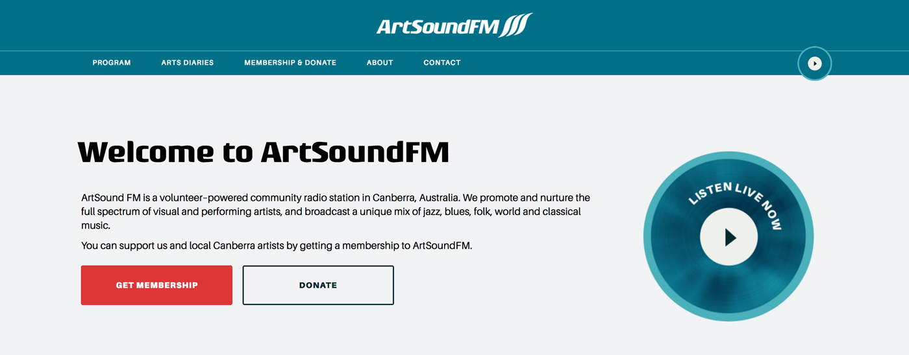

ArtSoundFM Redesign
Year 3 University Project
The project
User interface design has the ability to retain visitor engagement on websites, or turn them away. ArtSoundFM is a local radio station for the Canberra region. The station’s website informs listeners about upcoming events. It also allows them to read about featured albums, purchase memberships and apply for their own events to be advertised. While the site is informative, the user interface can discourage users from engaging with the site. For this project, the ArtSoundFM site was redesigned. The visual hierarchy was restructured, while the bulk of the content was kept the same. In redesigning the site, various modern radio sites were referenced to keep with industry trends. The overall look of the brand was refreshed, including the company colours and logo design, yet still effectively represented their brand identity. The final redesign is bright, easy to navigate and responsive. It has a clear visual hierarchy, and uses distinct sections to promote content.
See the project files
Please note that only the home, arts diaries and membership pages of the site redesign are live.
- The site redesign can be found here
- View the design process and project rationale here
- The original site can be viewed here
{kind=link}
{kind=link}
{kind=link}
{kind=link}
{kind=link}
{kind=link}
{kind=link}
{kind=link}
{kind=link}